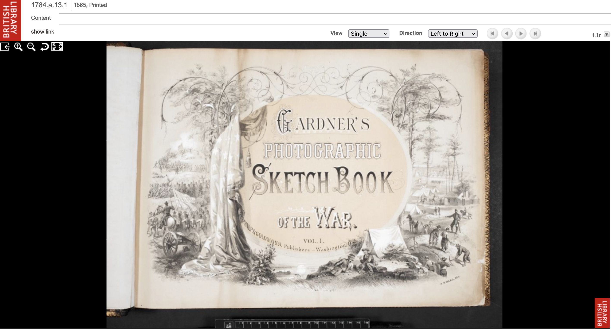
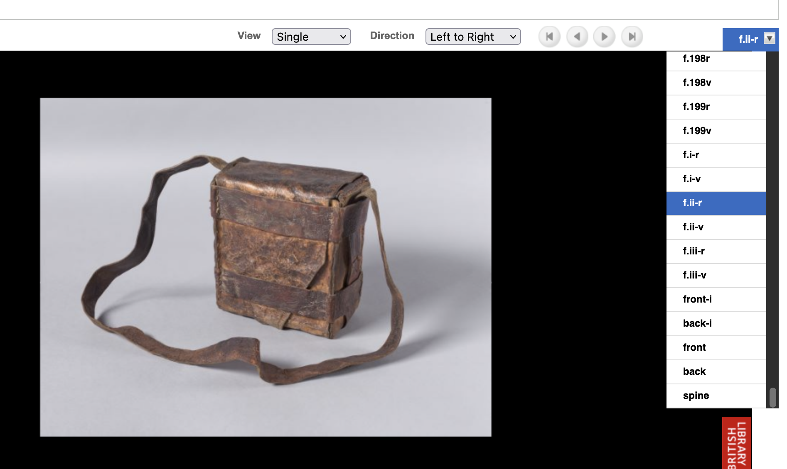

3 Approaching ML projects: defining the ‘problem’
How should we approach machine learning projects and how might this differ from other kinds of projects?
One of the first things we probably want to do when doing a machine learning project is to ensure we have defined what we are trying to achieve. Often this can be framed around a ‘business problem’. We put both of these in scare quotes because if we work in a GLAM institution we may not consider ourselves a ‘business’. We may also not be tackling a ‘problem’ as much as we’re hoping to machine learning to do something new. However, being clear about what the outcome is may be particularly important when we’re trying to use machine learning for more practical tasks.
If our goal is to produce a paper or do some exploratory assessment of what machine learning may enable us to do we may have more vague success criteria. We may, for example, be happy to apply some pre-trained models to some of our data and assess the performance of that model on our data. This assessment may be done manually i.e. look at a few example results some ‘off-the-shelf’ machine learning models produce for our data. It could also be a more robust assessment of model performance on an evaluation dataset. For example, we may apply a Named Entity Recognition model to some data we’ve annotated and see how well the model performs.
However, if we want to use machine learning to help us with a particular ‘practical’ process, we should try and be quite clear about what the issue is and what success would look like. This will be important when we come to assess whether any machine learning models we create – and the way in which we use these models is useful.
We’ll come back to assessing our model performance in more detail later. However, to know what performance is acceptable we need to have a good grasp of what our actual business problem is – what are the things we’re trying to achieve and how does this fit into existing or new workflows? If this is ill-defined it will be difficult to assess whether we’ve been successful or not.
If you have had some exposure to machine learning you may be thinking that we already have an obvious way of evaluating if a model is doing well or not: use some kind of metric such as accuracy or precision.
However, whilst this metric may be useful as a proxy for evaluating the success of your approach. However, which metrics you prioritise and the levels these metrics should reach will depend a lot on your broader ‘business goal’.
3.1 Do you need machine learning at all?
Once you have decided what problem you are trying to tackle you should also step back and ask whether machine learning is the only – or best – answer. Some other options that may make more sense:
- do the task manually
- do the task manually as part of an internal effort
- do the task through public facing crowdsourcing
- do the task in a computational way without machine learning
- don’t do the task at all
Whilst machine learning can be a very powerful tool, machine learning projects are usually not ‘quick’ or ‘easy’ wins.
If you have an existing process you are trying to integrate machine learning into you can use this existing approach as a comparison to any new approaches developed. This can be very useful for assessing the extent to which machine learning is practical in the setting you are using it.
3.2 Defining the ‘business’ problem for Hertiage Made Digital
The British Library has a vast amount of ‘legacy’ digitised content stored on network drives. The Heritage Made Digital (HMD) team has been tasked with making these available for users online. We have multiple terabytes of image files, mostly containing photos or scans of the items in our physical collection. One of the viewing platforms that we have made our manuscript image sets available on over the years is our Digitised Manuscripts (DM) website so that people can look at and study the digitised versions of the physical objects without needing to come into one of our buildings in St Pancras or Boston Spa.
The thing is, DM was never designed to be our primary, strategic, good-for-all-occasions image viewer. It was built for a specific project that wanted to publish a limited number of similarly constructed manuscripts. Namely the Greek Manuscripts project.

The physical structure of the items in the Greek Manuscripts project are largely uniform. They are bound codices (of varying sizes and material types) and to digitise these all you need to do is take a photo of the front cover, front flysheets, folios, end flysheets, back cover and spine. That’s six different types of images. Or, in terms of our standardised filenames (ignoring the r and v we put at the end of filenames for each recto and verso shot, for the sake of simplicity):
fblef- front coverfs001- front flysheetf001- foliofse001- end flysheetfbrig- back coverfbspi- spine
And so DM was built to accommodate these and only these options, with no room for something physically unusual that didn’t fit this standard.
Regardless of this shortcoming, DM was pretty good, and better than anything else we had at the time, so other projects started using it to publish their manuscript material. This is where the problem arose.
The material in these other projects wasn’t as uniform as the items in the Greek Manuscripts project, and sometimes we wanted to take images of fore-edges, or clasps, or bags, or anything else interesting or integral to the physical item. The only way to publish these images on DM was to assign them one of the six standard filenames, and the agreed approach was to call them an end flysheet, and give it a number at the end of the sequence. In other words, if you already have two end flysheets, the image filename of the fore-edge will be called fse003. A ‘fake’ flysheet.
This worked fine for years, but we are now at the point of moving on from Digitised Manuscripts and we are beginning to migrate all our digital content into our new preservation and access system, allowing people to view and download images from our IIIF-compatible viewer, the Universal Viewer.
This new system allows us to display whatever images we want, in any sequence order, and label them however we want, regardless of the filename. This gives us an opportunity to correctly relabel images that were published to DM as ‘fake’ flysheets, so that users can better understand the digital objects we’re presenting to them.

Unfortunately, however, we kept little to no records of which images we renamed as ‘fake’ flysheets. There are potentially hundreds or thousands of these scattered throughout the tens of thousands of items we’ve digitised. Rather than manually checking every image as we migrate it to the new system we thought it might be more efficient and sustainable to use an automated or semi-automated computational method to do this task, or at least get one to help us to do it.
It’s worth saying that even though we may have initially dreamed of a magic program to solve all our problems - identifying all our ‘fake’ flysheets with a click of a button and relabelling them for us - we very quickly downgraded our expectations. The main reason we couldn’t put our faith in a totally automated solution is because we know our collection (or at least we know how physically varied it can be), how big it is, and how we don’t really know everything about it. Given the myriad of items we’ve digitised over the last 20+ years, we were pretty sure a tool wouldn’t be able to pick out all the subtle differences in images with 100% accuracy - a task even trained humans find difficult to do. This turned out to be a fairly sensible assumption and what we actually needed was a tool that could be used as part of our existing migration workflow, confirming the large majority of images as real flysheets whilst flagging up images it suspected were fakes, for a human to then manually confirm or deny by looking at the image.
So the task became one to create a tool as quickly and easily as possible, that was simple to use and maintain, that fit into our existing workflow, gave us accurate results, and we felt confident enough to trust. Because we lacked the required software development skills within the team, we turned to colleagues with expertise in machine learning and set up a meeting to outline our requirements; so the concept for flyswot was born.
A bonus to this whole approach was that we could work more closely with colleagues we don’t necessarily engage with on a day-to-day basis. It also brought a subset of our team closer together in pursuit of a new extracurricular activity, and we’d all be able to learn about new tools and technologies.